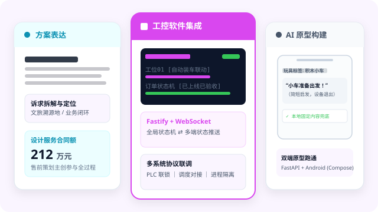

SOLUTIONS & PRODUCT PORTFOLIO ｜ 董达
从模糊想法到可运行系统
商业定义 · 工业现场落地 · AI 原生自主闭环
把模糊的非标诉求梳理出商业主线；
亲手用全栈代码与 AI Coding 跑通可运行 Demo；
深入物理现场与生产网络，完成 100% 确定性交付。

考亭古街：把模糊的非标诉求，变清晰成立的商业方案
面对信息繁杂、没有定论的原始诉求，不被杂音带偏，提炼出唯一成立的商业主线，并推动商务落地。
混沌输入
地方政府筹办文旅大会，文化资源庞杂（朱子理学、建盏、山水）。原始诉求宏大却模糊，各方诉求割裂，无人说得清项目到底该怎么做。
破局提炼
坚决跳出“仿古小吃街”俗套。从文化源流与商业消费逻辑中找到差异化变量，升维提炼出“文旅溯源地”核心命题，构建清晰感知文脉逻辑。
方案抗辩
将命题拆解为空间规划、核心业态落位与运营蓝图。主持面向政府高层多轮汇报抗辩，击退竞品方案，推动项目立项。
商业闭环
协同跨专业团队推动施工图与节点落地，达成合同履约与阶段性回款，所参与设计服务合同金额为 212 万元。

商业定义核心方法
铺平市场、受众心理与客观约束，找到那个“如果不做就会平庸、做了就能立竿见影”的关键变量。
将琐碎诉求升维为行业命题。有了统一的叙事骨架，后续规划与工程动作皆有依据，方案不可替代。
清晰拆解成本、工期与履约节点，确保方案经得起推敲，亲手跑通商业现金流闭环。
数字月台：把复杂的现场流程，交付为高可靠的工业中控
面对硬件各异、流程割裂且高容错要求的物理现场，用软件状态机构建确定性，实现 100% 真实联调落地。
现场痛点
自动装车涉及地磅、装车机、PLC 与人脸识别，设备异构。客户原始需求仅为单屏看板，根本无法协同多工位冲突与异常断线。
状态机重塑
将单屏看板升维为工业中控协同系统。梳理订单生命周期状态机、工位互斥规则与秒级配置热回退机制，确保数据严格归一化。
亲手实现
基于 Node.js / Fastify 构建中控服务，React + TypeScript 开发多端触屏 HMI，WebSocket 广播实现毫秒级状态同步；现场排查修复机器人定位偏差。
严格验收
坚守“生产链路严禁 Mock，功能完成必须有证据”。与真实物理 PLC 控制器及硬件网关无缝联调，通过生产现场严苛验收。

工业系统落地守则
工业现场不同于普通页面，状态机错乱可能导致机械碰撞。始终将异常互锁、容错捕获与人工急停放在第一位。
中控作为唯一事实来源，通过轻量 WebSocket 向所有工位实时推流，消灭信息不对称与脏写入。
杜绝模拟器应付。亲赴天津等项目现场抓包排查机器人定位偏差与网络抖动，协同恢复自动化生产节拍。
EmergentInc 元胞会社：让 AI 走出对话框，构建自主进化的商业系统
不把 AI 当作聊天玩具。设计并实现一个支持智能体自主探索机会、开发产品、自动加密收款并安全进化的完整架构。
突破对话框
打破单次 Prompt 局限。元胞会社定义全新分工：人提供想法与决策；AI 人物（千机）与元胞自主探索机会、构建产品、对外推广销售并持续演化。
4 链 USDT 核销
免登录商城前端 + 链上自动结算。支持 Solana、BSC、Polygon 与 TRON 四条主网 USDT，通过独立 Reference 与微小尾数匹配，实现零人工介入的自动核验与归集。
纯 AST 安全沙箱
智能体技能在遗传权限内生成。设计 pure-ast-json@1 纯 AST JSON 解释执行 JavaScript 函数，完全不使用 eval，严禁未授权访问宿主系统文件与网络。
持久区与自进化
“代码可以变化，业务数据持续存在”。独立维护人物、订单与谱系 SQLite；Release 必须通过类型检查、Vitest 测试，由 Supervisor 校验哈希并由人类批准升级。

证明的不可替代架构能力
不只是写 Prompt，而是设计了包含稳定人设（千机）、独立 World、元胞生命周期、记忆谱系与跨代基因的完整自主体系。
严禁 Agent 自主修改运行中的正式 Release 代码或引入未知依赖。所有技能晋升必须冻结不可变快照并由人类 Owner 审查验证。
用现代 TypeScript、Node.js 24、多链 RPC 接口与自动化单元测试，亲手搭建起兼具工程美感与商业可行性的高水准代码库。
Get in Touch
讨论商业创新、快速 PoC 与系统落地机会
从非标诉求的商业定位，到用 AI 亲手跑通可运行的原型 Demo，再到严苛生产环境的系统交付 —— 欢迎随时交流项目合作、方案咨询或全职加入。